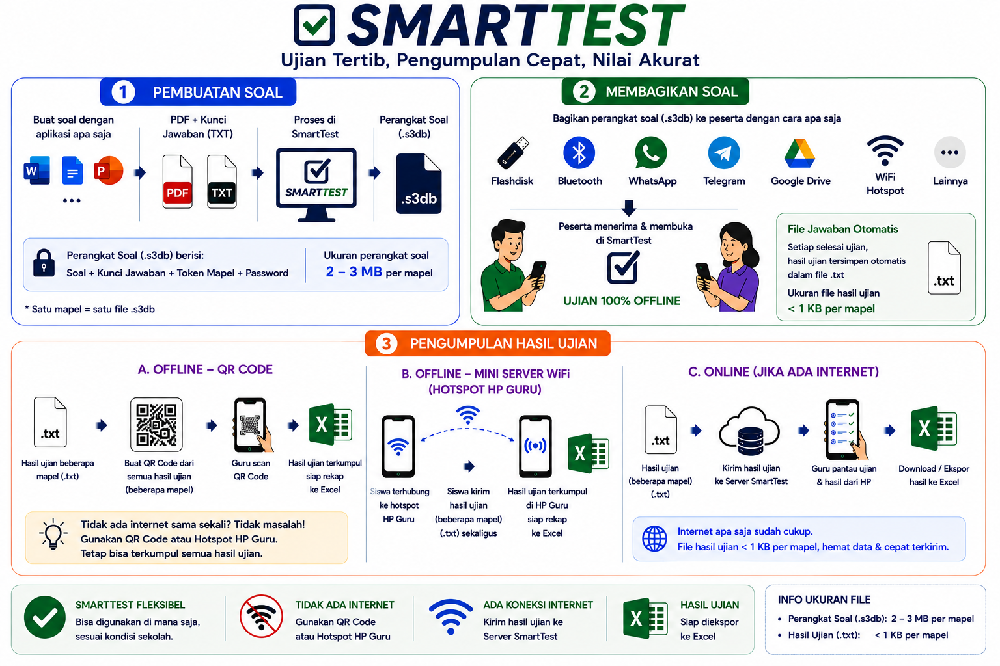

SmartTest adalah sebuah pendekatan ujian digital yang dirancang agar pelaksanaan ujian tidak harus bergantung terus-menerus pada server, internet, WiFi, maupun jaringan lokal.
Kenali SmartTestSmartTest bukan sekadar konsep. Sistem ini telah digunakan dalam pelaksanaan ujian nyata di beberapa sekolah dan terus dikembangkan berdasarkan pengalaman penggunaan.
SmartTest adalah sistem ujian digital dengan pendekatan yang berbeda. Soal tidak harus terus-menerus diambil dari server selama ujian berlangsung. Perangkat soal dapat dipersiapkan terlebih dahulu, kemudian digunakan langsung pada perangkat peserta.
Soal, kunci jawaban, token, dan informasi yang diperlukan diproses menjadi perangkat soal SmartTest yang siap digunakan.
Setelah perangkat soal tersedia, peserta dapat mengerjakan ujian langsung pada perangkat masing-masing.
Pelaksanaan ujian tidak harus bergantung pada ketersediaan koneksi internet.
Peserta tidak harus terus terhubung ke WiFi, LAN, atau jaringan lokal selama mengerjakan soal.
Server tidak harus terus-menerus melayani permintaan soal dari seluruh peserta selama ujian berlangsung.
Selama HP peserta masih memiliki daya dan dapat menyala, peserta tetap dapat melanjutkan pengerjaan ujian.
Soal dibawa ke perangkat peserta.
Peserta mengerjakan secara mandiri.
Hasil dikumpulkan sesuai dengan kondisi
dan fasilitas yang tersedia.
Berikut gambaran sederhana proses pembuatan, pelaksanaan, dan pengumpulan hasil ujian menggunakan SmartTest.

Soal dan kunci jawaban diproses menjadi perangkat soal SmartTest.
Perangkat soal dapat dibagikan menggunakan cara yang sesuai dengan kondisi yang tersedia.
Peserta mengerjakan soal secara mandiri dan hasil dikumpulkan melalui metode yang tersedia.
Meskipun peserta dapat mengerjakan ujian tanpa internet maupun jaringan WiFi, hasil ujian tetap dapat dikumpulkan melalui beberapa pilihan.
SmartTest telah digunakan dalam pelaksanaan ujian nyata di beberapa sekolah selama lebih dari satu tahun.
Penggunaannya dilakukan dalam berbagai skala, mulai dari pelaksanaan ujian dengan ratusan peserta hingga sekitar 1.900 siswa dalam satu sekolah.
Penggunaan tersebut bukan sekadar demonstrasi atau simulasi, tetapi digunakan dalam pelaksanaan ujian yang sebenarnya dan terus dikembangkan berdasarkan pengalaman penggunaan.
SmartTest lahir dari perjalanan lebih dari sepuluh tahun mencoba berbagai pendekatan dalam membangun sistem ujian digital.
Mulai dari sistem berbasis server, internet, hingga jaringan lokal. Dari perjalanan tersebut muncul sebuah gagasan:
Baca perjalanan lengkap dan gagasan di balik SmartTest melalui Surat Terbuka.
📖 Baca Surat Terbuka